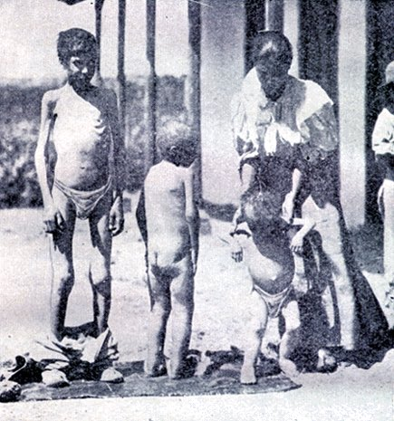
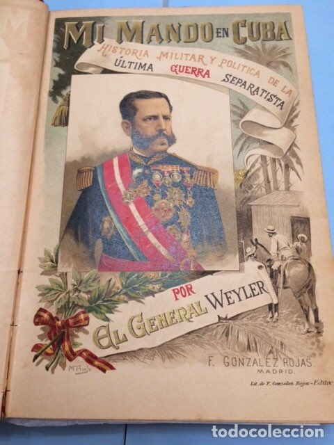
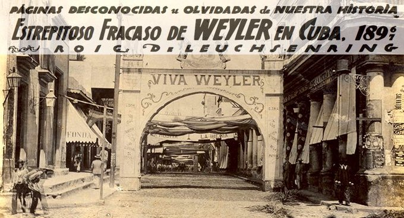
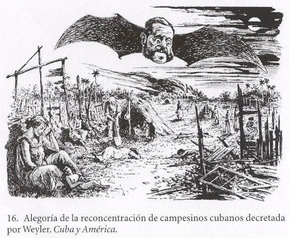
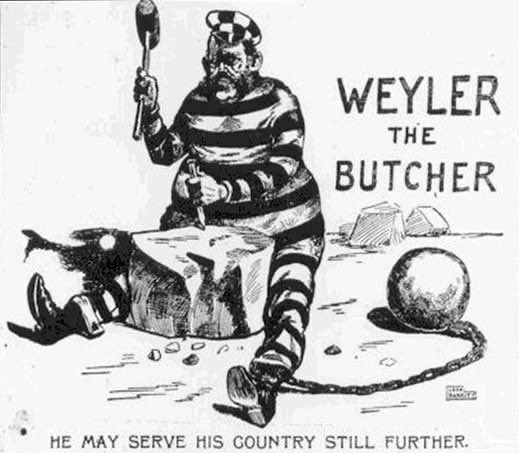

Los Hilos de Monik
Valeriano Weyler y la reconcentración
Publicado el 12 de junio de 2020 - 13 tweets - Hilo original en Twitter
1
A Valeriano Weyler se le ha llamado el creador de los campos de concentración -e incluso- el Hitler español.
Su Reconcentración provocó la muerte de aproximadamente 170,000 cubanos (el 10% de la población de la época)
Pero ¿cómo fue que se llegó a eso? ¿Quién fue Weyler?

2
¿A quién se le ocurrió reconcentrar a los campesinos?
En realidad fue a ... Arsenio Martínez Campos.
Por su éxito como negociador del Pacto del Zanjón, Martínez Campos regresó a Cuba en 1895 para tratar de sofocar la guerra que recién comenzaba.
Pero eran otros tiempos.
3
En una carta a Cánovas en junio de ese año, decía: "Sólo los pocos españoles de la Isla se proclaman como tales ... el resto ... odian a España"
En esta carta anticipa que sólo con medidas extremas se podría ganar la guerra.
Pero se niega a ser él quien las implemente.
4
"Podríamos reconcentrar en ciudades a las familias del campo, pero ... la miseria y el hambre serían terribles ... Entre nuestros generales, solo Weyler tiene la capacidad necesaria ... yo conservo ciertas creencias que me prohíben .... actos parecidos" decía en su carta.
5
Martínez Campos finaliza advirtiendo que aún si España ganase la guerra, en menos de 12 años habría otra.
Cuando Gómez y Maceo logran completar la invasión a Occidente. Martínez Campos prefiere dimitir antes que tomar medidas más extremas.
En 1896 llega Weyler a Cuba.
6
Valeriano Weyler había sido agregado militar en Washington durante la guerra civil en EE.UU. y ya conocía Cuba. En 1869, lideró la toma de Bayamo (o lo quedó tras el incendio)
De costumbres espartanas, se le consideraba cruel con sus hombres y amante de los caballos.
7
¿Por qué Martínez Campos lo recomendó?
Porque ya había probado que podía ser despiadado:
- En las guerras carlistas destruyó propiedades y mató a no combatientes
- En Filipinas, creo una versión reducida de lo que luego fue la Reconcentración
8
En Cuba, describe la situación como "anárquica", especialmente entre las tropas.
Como dato curioso, su primera impresión de los rebelde fue que el día que llegó a La Habana no hubo suministro de leche, pues los insurrectos no dejaban pasar comida si no se les pagaba.
9
Su estrategia militar fue concentrar al ejército y "barrer" de Occidente a Oriente. El plan, por cierto, funcionó. Weyler cercó a Maceo en Pinar del Rio, lo cual eventualmente condujo a su muerte.
La reconcentración era la "estocada final" para privar a los rebeldes de apoyo.
10
Los detalles terribles de la Reconcentración merecen post aparte. Pero no se debe pensar que fue algo de un sólo hombre. Weyler estuvo plenamente apoyado por el gobierno de Cánovas; en 1902 el Congreso de EE.UU. lo eximió de culpa (tras haber hecho algo parecido en Filipinas)
11
y a su regreso a España en 1897, Weyler fue recibido como un héroe.
La muerte de cientos de miles de cubanos fue justificada como "el único método eficiente de lucha" y, en palabras de Weyler, los insurrectos reconocían el impacto de la medida en cartas interceptadas
12
Weyler regresó como el hombre que casi gana la guerra, pero fue víctima de las circunstancias políticas.
Palma de Mallorca y Tenerife tienen plazas dedicadas a él. Su bisnieto Fernando Weyler, dice que su reputación fue dañada para facilitar la entrada de EE.UU. a Cuba.
13
Y como dato final: la silla de Maceo que Pedro Sánchez devolvió a Cuba, pertenece a una colección de la familia Weyler. Quienes, por cierto, demandaron al gobierno por haberla traído sin su autorización ¿en qué habrá quedado eso?
Vea el artículo Sánchez desoye a los Weyler y se marcha a Cuba con la Silla de Maceo